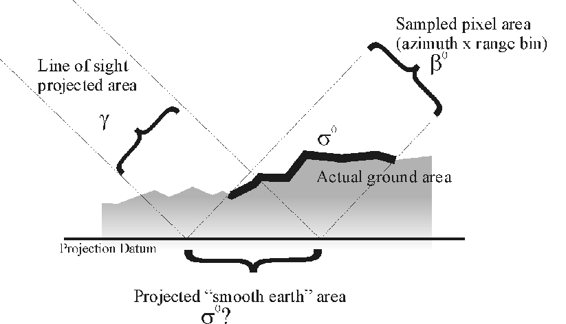

import xarray as xr
import rioxarray
from pathlib import Path
import folium
import matplotlib.pyplot as plt
import numpy as npNormalizing Radar Cross Sections
Microwave remote sensing is a technique that uses a certain type of electromagnetic waves (i.e., microwaves have a wavelength ranging from about one meter to one millimeter) to gather information about objects or areas on the ground. How does this work? Let´s break it down into points:
Measuring returning energy: The key idea is to measure how much energy is in the microwave signal that bounces back to the sensor. This is like measuring how strong the signal is after it reflects off some objects on the ground.
Power: We also look at how much energy is received over time. This is called power, and it’s given by \(P\) (with unit Watts). It tells us how much energy is coming back to the radar system.
Radar Imaging: Radar systems send out microwaves and then measure how much of the energy is reflected back from different areas. This helps us create images or maps based on how much energy returns, which can tell us a lot about the surface or objects being observed.
Radar imaging systems can be expressed as a ratio between scattered power (\(P_s\)) and incident power (\(P_i\)), so that:
\[\sigma = \frac{P_s}{Pi} 4 \pi R^2 \, [m^2] \quad \text{,} \quad \text{(equation 1)}\]
provides a backscatter coefficient for distributed targets per given reference area, also known as a radar scattering cross section.
Increasing the target area on ground surfaces increases the total backscattered power by the same factor, and so the radar cross sections changes with the size of illuminated area. Radar cross sections are therefore often normalized by an approximation of the illuminated ground area \(\hat{A}\), as follows:.
\[\sigma^0 = \sigma / \hat{A} \, [1] \quad \text{.} \quad \text{(equation 2)}\]
This correction gives a more faithful description total backscattered power independent of the size of the illuminated area.
Backscattering can, furthermore, be highly dependent on the angle of the incident energy when the target area is signified by reflective objects of different heights, such as trees. This phenomenon is called volume scattering and can be accounted for by again normalizing with the cosine of the local incidence angle:
\[\gamma^0 = \sigma^0 / \cos{\theta_i} \, [1] \quad \text{.} \quad \text{(equation 3)} \]
Now let’s have a look at some backscatter coefficients (\(\gamma^0\) = gmr, \(\sigma^0\) = sig0) and their respective local incidence angle (plia) over an area around the city of Modena, Italy.
Loading Normalized Backscatter Data
We first load the data with xarray, select an area of interest (AOI), and modify the variables gmr, sig0, and plia by dividing by 100. The latter step is necessary as the variables have been multiplied by 100, allowing more efficient storage of the data by decreasing the file size.
def _preprocess(x):
x = x / 100
return x.rename(
{"band_data": Path(x.encoding["source"]).parent.stem}
).squeeze("band").drop_vars("band")
ds = xr.open_mfdataset(
"~/shared/datasets/rs/sentinel-1/A0105/EQUI7_EU010M/E047N012T1/**/*.tif",
engine="rasterio",
combine='nested',
preprocess=_preprocess
)
dsArea of Interest
Let’s have a closer look at the area of interest by taking the bounding box of the xarray Dataset with rioxarray method transform_bounds and using this to define the viewing window on a leaflet map with folium.
ds_aoi = ds.sel(x=slice(4.78e6, 4.795e6), y=slice(1.28e6, 1.265e6)).compute()
bbox = ds_aoi.rio.transform_bounds("EPSG:4326")
folium.Map(
max_bounds=True,
location=[bbox[1] + (bbox[3] - bbox[1]) / 2, bbox[0] + (bbox[2] - bbox[0]) / 2],
min_lat=bbox[1],
max_lat=bbox[3],
min_lon=bbox[0],
max_lon=bbox[2],
zoom_control=False,
scrollWheelZoom=False,
dragging= False
)Figure1: Map of the target area.
Visualizing the Backscatter Coefficients
Now we can visualize the backscatter coefficients by using the xarray method plot, and by plotting these on a matplotlib figure with 2 axes (i.e., representing the subplots on a multipanel figure).
fig, ax = plt.subplots(1,2, figsize=(20,8))
ds_aoi.sig0.plot(ax=ax[0], robust=True)
ds_aoi.gmr.plot(ax=ax[1], robust=True)Figure 2: The \(\sigma^o\) (left) and \(\gamma^o\) (right) from the JupyterHub shared folder plotted on a 2D map
Now let’s have a look at how the local incidence angles look like when plotted on 2D map and compare it with \(\sigma^o\).
fig, ax = plt.subplots(1,2, figsize=(20,8))
ds_aoi.sig0.plot(ax=ax[0], robust=True)
ds_aoi.plia.plot(ax=ax[1], robust=True)Figure 3: The \(\sigma^o\) (left) and local incidence angle (plia: right) from the JupyterHub shared folder plotted on a 2D map
Calculating \(\gamma^o\) with numpy
It is clear by looking at the local incidence angles that the area is marked by topographically severe terrain. One of the data treatments corrected for the features related to rough terrain in Figure 1, whereas the other did not.
Let’s now look at what the choice of backscatter coefficient (\(\sigma^0\) or \(\gamma^0\)) has on the data. We do this by first converting \(\sigma^0\) to \(\gamma^0\) with equation 3, like so:
# linear scale
ds_lin = 10 ** (ds_aoi.sig0 / 10)
# conversion to gamma
ds_gm = ds_lin / np.cos(np.radians(ds_aoi.plia))
# dB scale
ds_aoi["gm"] = 10 * np.log(ds_gm)
fig, ax = plt.subplots(1,2, figsize=(20,8))
ds_aoi.sig0.plot(ax=ax[0], robust=True)
ds_aoi.gm.plot(ax=ax[1], robust=True)Figure 4: The \(\sigma^o\) (left) from the JupyterHub shared folder and the derived \(\gamma^0\) plotted on a 2D map
Radiometric Terrain Correction
Clearly the choice of backscatter coefficient alone is not the full story. The main difference in backscatter coefficients in Figure 2 relates to the approximation of the geometrical area used for the normalization (Figure 5). The approximation of illuminated ground area for \(\sigma^0\) is calculate by a tangent on an ellipsoid model for the Earth. The \(\gamma^0\) backscatter coefficient in the original data was generated with a terrain flattening method; integrating through a reference digital elevation model to determine the local illuminated area at each radar position (Figure 5; referred to as Sampled pixel area).

Figure 5: Three different ways in which to normalise by area (Woodhouse 2006).
References
Woodhouse, Ian H., 2006, Introduction to Microwave Remote Sensing, Chapter 5: Microwaves in the Real World, pp 93–149, CRS Press